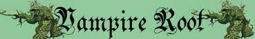

Balzare dal Sottosuolo;
Provocare Emorragie;
Perforazione Superiore
Resistenza Superiore alla Botta;
Resistenza Moderata alla Punta;
Resistenza Superiore al Freddo;

|
|
Climate/Terrain | Montagne o Colline |
| Frequency | Rare | |
| Organization | Solitary or Small Group | |
| Activity Cycle | Any | |
| Diet | Carnivore (Blood Drinker) | |
| Intelligence | Non (0) | |
| Treasure | Vedi Sotto | |
| Alignment | Neutral | |
| No. Appearing | 1d10: (1-6) 1 (7-10) 1d3+1 | |
| Armor Class | 2 | |
| Movement | 9, Scavare 3 | |
| Hit Dice | 8+8 | |
| Thac0 | 12 | |
| No. of Attacks | Morso | |
| Damage / Attacks | 1d10+2 (perforazione) | |
| Special Attacks | Istinto Predatorio; Balzare dal Sottosuolo; Provocare Emorragie; Perforazione Superiore |
|
| Special Defenses | Corpo Non Direzionale; Resistenza Superiore alla Botta; Resistenza Moderata alla Punta; Resistenza Superiore al Freddo; |
|
| Special Weakness | Vulnerabilità Minore al Fuoco | |
| Magic Resistance | None | |
| Senses | Tremor Sense (30 m.) | |
| Size | Large (3 m. lunghezza) | |
| Morale | Fearless (20) | |
| XP value | 2254 |
Descrizione
La creatura è costituita da un ammasso di radici intrecciate a forma di serpente, lunga circa il doppio di un essere umano. Queste radici si muovono contorcendosi in continui spasmi irregolari. Le radici hanno un colore marrone scuro e terminano a dozzine nella sommità anteriore della creatura disponendosi circolarmente e lasciando uno spazio vuoto all'interno del cerchio tanto da far apparire tale sommità come se fossero delle grosse fauci.
Combat
La radice vampiro
si nutre di sangue fresco. Per tale motivo la creatura attacca con le proprie
radici perforando la carne dei propri avversari e provocando emorragie di
sangue. Il sangue che cade nel terreno, infatti, costituisce il nutrimento
necessario di questi esseri piantiformi. Con un unico colpo andato a segno la
creatura riesce a percepire se il proprio avversario è dotato di sangue o meno.
In caso negativo la creatura si dirigerà verso altri avversari o, se necessario,
sparirà nel sottosuolo. Quando la creatura ha provocato un'emorragia la stessa
cercherà di attaccare altre creature per diffondere il più possibile la
fuoriuscita di sangue, ciò sempre che risulti non eccessivamente gravoso per la
stessa disinteressarsi del precedente avversario. La radice vampiro può muoversi
agevolmente nel terreno, ad eccezione della roccia che non riesce a perforare, e
lascia dietro di se solo un ammasso di terreno smosso (questa creatura non
lasciando cavità, quindi, non può essere seguita senza scavare). Raggiunto il
punteggio di ferite critiche la creatura, solitamente, fugge rintanandosi nel
sottosuolo. Si noti che, una volta emersa,
la creatura impiega tutto il suo movimento
di un round per immergersi totalmente nel terreno.
ISTINTO PREDATORIO
(Lesser Special
Ability):
La creatura possiede un forte
istinto predatorio, per tale motivo costei riceve un
bonus costante di +1 alla Thac0
con i suoi attacchi.
BALZARE DAL SOTTOSUOLO
(Lesser Special
Ability):
La creatura, quando è possibile, attende con pazienza subito sotto il terreno
ed attacca il proprio bersaglio emergendo rapidamente dal sottosuolo. Quando ciò
avviene tutte le creature attaccate che non l'avevano notata dovranno tirare una
prova di sorpresa con una penalità di -3 al tiro. La creatura, inoltre, essendo
preparata all'emersione uscirà rapidamente potendo caricare automaticamente un
qualsiasi avversario si trovi entro la sua distanza di movimento emerso pieno
(fattore movimento 9).
PROVOCARE
EMORRAGIE
(Powerful Special
Ability):
Ogni volta che questa creatura colpisce
una vittima dotata di sangue la stessa deve superare
superare un
tiro salvezza su robustezza.
Al tiro salvezza sarà applicato il modificatore dovuto alla differenza di
livello tra la vittima e la creatura, inoltre la vittima applicherà al tiro
salvezza il modificatore posseduto ai punti ferita per il proprio punteggio di
costituzione, le creature Large ottengono un ulteriore bonus di +2 al tiro
salvezza. Le creature
di taglia Huge o superiore, quelle non dotate di sangue (si pensi agli esseri
vegetali, ai costruiti, ai non morti, agli elementali) e quelle dotate di un
potere rigenerativo almeno pari ad 1 punto ferita al round sono immuni agli
effetti questa abilità. Se il tiro salvezza fallisce la vittima inizierà a
perdere copiosamente sangue subendo gli effetti di una
Emorragia Maggiore:
alla fine del round in cui si è subita la ferita ed alla fine di ogni successivo
round la vittima perde 1d2
punti ferita. La perdita
continua (anche durante il coma) fino alla morte del personaggio. Un'emorragia
maggiore può essere fermata solo da chi possiede la competenza healing ed abbia
a disposizione 2 bendaggi con una prova nell'abilità. La perdita di sangue può
anche essere fermata da una magia di
cure light wounds
oppure attraverso qualsiasi altra cura magica che sia in grado di far recuperare
in un singolo round
5 o + punti ferita.
Sono irrilevanti risultati critici od acritici del tiro salvezza se non per
valutare un fallimento od un successo automatico dello stesso. Non potendosi
cumulare gli effetti dell'emorragia, una creatura che è sotto gli effetti di
un'emorragia diventa temporaneamente immune agli effetti di questa abilità
speciale fino a che l'emorragia non sarà ultimata.
PERFORAZIONE SUPERIORE
(Superior Special
Ability):
In alcuni casi la creatura è capace di
perforare a fondo ed in profondità il proprio avversario conficcando le proprie
radici nel corpo di quest'ultimo. Ciò avviene quando questa creatura colpisce una vittima con
il suo morso effettuando un
tiro per colpire naturale da 17 a 20.
Quando ciò si verifica l'attacco provocherà il
1d10 danni supplementari. Tutti i danni saranno considerati danni da
punta e
provenienti da un unico attacco (ad es. ai fini dei critici e dei danni alla
corazza).
CORPO
NON DIREZIONALE
(Lesser Special
Ability): La direzione di
arrivo degli attacchi nei confronti della creatura è totalmente irrilevante. Il
corpo della stessa, infatti, non ha una direzione frontale. La creatura combatte
e si difende su tutti i lati intorno al suo corpo allo stesso modo. Tutti gli
attacchi rivolti alla creatura, quindi, saranno considerati come attacchi
frontali non subendo la stessa in alcun caso le penalità previste per gli
attacchi alle spalle. Anche in caso di attacchi di opportunità, infatti, la
creatura li riceverà senza che chi li effettua possa applicare i benefici
previsti per gli attacchi alle spalle.
RESISTENZA SUPERIORE ALLA BOTTA
(Typical Ability):
Il corpo della creatura è particolarmente resistente ai danni da botta, per tale
motivo la stessa subirà solo la
metà (per difetto) di tutti i danni da botta
provocati nei suoi confronti.
RESISTENZA MODERATA ALLA PUNTA
(Typical Ability):
Il corpo della creatura è particolarmente resistente ai danni da punta, per tale
motivo la stessa ridurrà del
33% (per eccesso) tutti i danni da punta
provocati nei suoi confronti.
RESISTENZA SUPERIORE AL FREDDO
(Typical Ability):
Il corpo della creatura è particolarmente resistente ai danni da freddo, per
tale motivo la stessa subirà solo la
metà (per difetto) di tutti i danni da botta
provocati nei suoi confronti.
VULNERABILITA' MINORE AL FUOCO (Typical Weakness): Il corpo della creatura è particolarmente sensibile ai danni da fuoco, per tale motivo la stessa subirà il 125% (per eccesso) di tutti i danni da fuoco, sia di natura magica che naturale, provocati nei suoi confronti.
LESSER COMBO
-
RESISTENZA SUPERIORE ALLA BOTTA e
RESISTENZA MODERATA ALLA PUNTA
-
Le due abilità costituiscono una combo
in quanto difendono la creatura da due dei tre possibili danni fisici. In
considerazione della difesa moderata ai danni da punta questa combo può essere considerata
minore.
Habitat/Society
Le radici vampiro sono predatori stanziali. Queste creature vegetali, infatti, si stabiliscono in zone di passaggio come lungo strade, sentieri, aree coltivate dove il sottosuolo non è eccessivamente roccioso e dove possono aspettare l'arrivo costante di vittime ignare della loro presenza. Qualora queste creature si sono stabilite in un territorio da un certo periodo possono essere avvistati resti di corpi dissanguati od ossa. La creatura, infatti, una volta abbattuto un nemico non lo divora ma lascia che lo stesso si dissangui sul terreno. La radice vampiro, infatti, si nutre proprio del fluido corporeo delle creature che penetra nel sottosuolo.
Ecology
Le radici vampiro sono facili da "coltivare". Una volta che le stesse si stabiliscono in un'area, infatti, non la lasciano fino a che il suolo è periodicamente bagnato di sangue. Per tale motivo, in certi casi, creature o personaggi abbastanza potenti hanno la discutibile abitudine di fare stanziare queste radici nelle loro zone di interesse utilizzandole indirettamente come guardiani.
Tesoro
Le radici vampiro non accumulano tesori, cercando nel terreno intorno a dove si sono stabilite, però sarà possibile ritrovare eventuali oggetti lasciati sul suolo dalle vittime delle creature. Per un controllo accurato del terreno occorre impiegare un'intera giornata di lavoro, per un controllo superficiale basta, invece, un'ora. Le percentuali di ritrovamento, quindi, variano a seconda del tipo di controllo effettuato. Ogni creatura oltre la prima che effettua il controllo dona il bonus tra parentesi, in nessun caso, però, la % di ritrovamento può superare la cifra indicata come massima. Una volta effettuata una ricerca accurata non potranno effettuarsi altre ricerche. Se, invece, viene effettuata una ricerca veloce potrà effettuarsi una accurata ma non potranno ripetersi i tiri delle voci che sono state ritrovate a seguito della ricerca veloce. I personaggi dotati della competenza Observation che riescano in una prova della stessa ottengono un bonus di +3% alla percentuale di ritrovamento (anche oltre il massimo previsto dalla tabella).
|
% di ritrovamento in caso di ricerca accurata |
% di ritrovamento in caso di ricerca veloce |
TIPOLOGIA | Ammontare ritrovato |
| 8% base, +2% a persona (16% massimo) | 4% base, +1% a persona (8% massimo) | Gemme | 1d6 |
| 10% base, +2% a persona (20% massimo) | 5% base, +1% a persona (10% massimo) | Oggetti Preziosi | 1d3 |
| 15% base, +3% a persona (30% massimo) | 8% base, +2% a persona (16% massimo) | Oggetti Comuni | 1d3 |
| 8% base, +2% a persona (16% massimo) | 4% base, +1% a persona (8% massimo) | Monete di platino | 1d20 * 3 |
| 8% base, +2% a persona (16% massimo) | 4% base, +1% a persona (8% massimo) | Monete d'oro | 2d20 * 5 |
| 8% base, +2% a persona (16% massimo) | 4% base, +1% a persona (8% massimo) | Monete d'argento | 2d20 * 10 |
|
10% base, +2% a persona (20%
massimo) + 5% base, +1% a persona (10% massimo) |
5% base, +1% a persona (8%
massimo) + 3% base, +1% a persona (6% massimo) |
Oggetto magico | 1 1d10: (1-7) common (8-10) rare |
| 15% base, +3% a persona (30% massimo) | 8% base, +2% a persona (16% massimo) | Arma | 1 |
| 15% base, +3% a persona (30% massimo) | 8% base, +2% a persona (16% massimo) | Armatura | 1 |